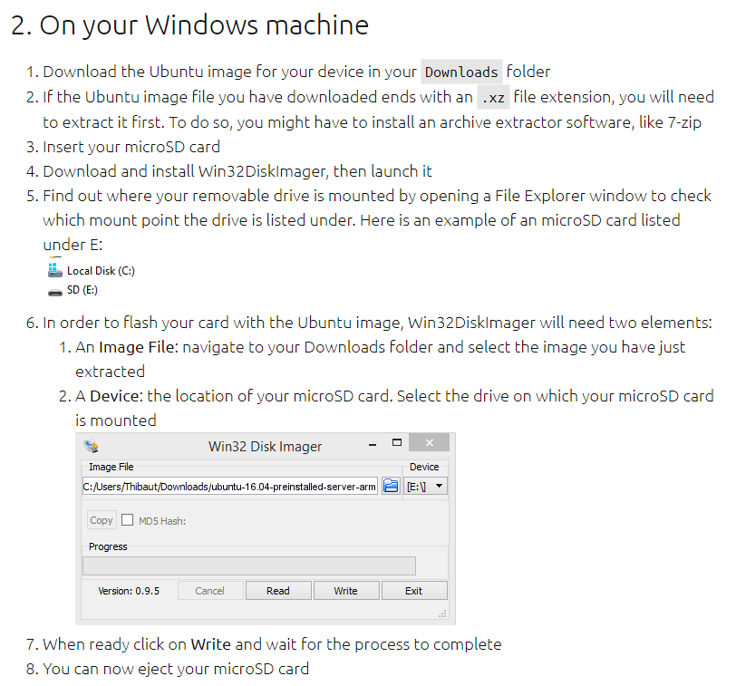

树莓派4安装ubuntu server

树莓派的官方镜像在Docker上面支持不怎么好，我的树莓派打算搭成一个家庭的微型服务器，所以打算装一个ubuntu server。本篇文章是我踩过坑之后的分享。
ubuntu server的官方引导下载地址
https://ubuntu.com/download/raspberry-pi/thank-you?version=20.04&architecture=arm64+raspi
我下载的20.04版本的下载地址：
http://cdimage.ubuntu.com/releases/20.04/release/ubuntu-20.04-preinstalled-server-arm64+raspi.img.xz
因为国外的cdn下载比较慢，所以我在清华大学的镜像库中找到一个相同的
https://mirrors.tuna.tsinghua.edu.cn/ubuntu-cdimage/ubuntu/releases/20.04/release/
我下载的是上图这个，arm64版本，因为我在的树莓派上装docker 很多镜像没有对应的arm/v7版本，所以打算装一个arm64版本的ubuntu server。
下载下来后参考这篇教程进行安装

意思就是在你的windows机器上，使用zip工具解压.xz文件，得到一个.img格式的文件，然后使用Win32DiskImager 加载并Write写入到你的microSD卡
写入完之后，把卡插到我的树莓派4，然后连上一个键盘+显示器，我就开始了我的树莓派 + ubuntu server之旅。继续踩坑。
如何连接无线网络看我另一篇文章。
PS: microSD卡写入前，建议用一个U盘格式化工具进行格式化，如：SD Card Formatter